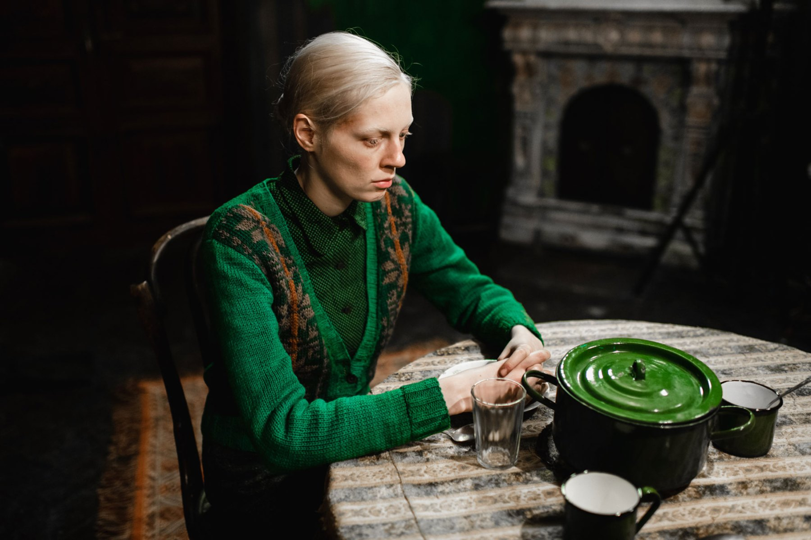
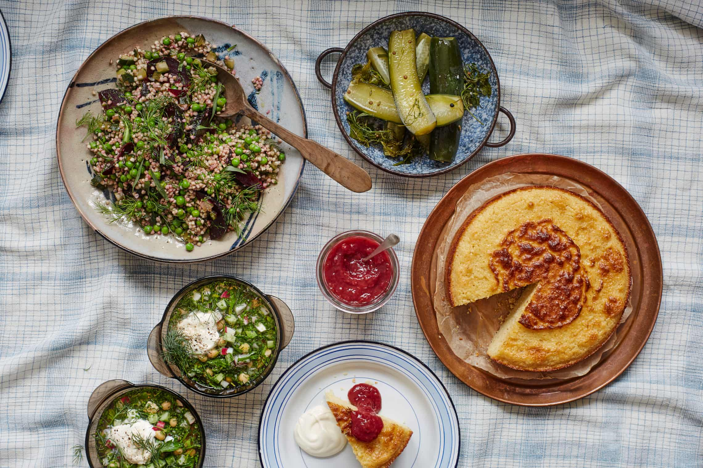

See
Beanpole
1945, Leningrad. World War II has devastated the city. Two young women, Iya and Masha, search for meaning and hope in the struggle to rebuild their lives amongst the ruins.
 Watch Beanpole on MubiListen
Russian Feminism
For this Russia Z edition of The Calvert Journal podcast, writer and curator Anastasiia Fedorova talks to activist and DJ Lölja Nordic, researcher and activist Sasha Alekseeva, and artist Maria Gorodetskaya about the new wave of Russian feminism and its place in global debates around gender equality.
Russia Z Feminism podcast on SoundcloudTaste
A summer picnic
Check out Alissa Timoshkina's picnic recipes - all vegetarian!
 Four Russian picnic recipes